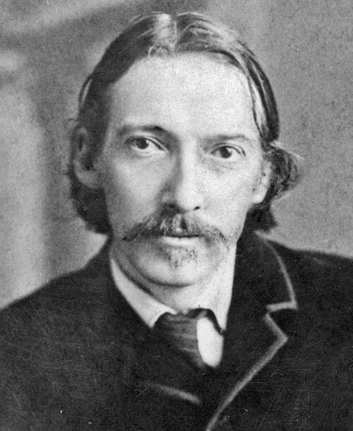

Robert Louis Stevenson was a Scottish novelist. He was born on the 13th of November 1850 and died on the 3rd of December 1894. He is one of the most translated authors in the world. Born in Edinburgh, he died in the Kingdom of Samoa, where he became politically engaged, advocating against the tyranny of great powers such as Great Britain, Germany and the United States. He was a renowned writer and was the author of Strange Case of Dr Jekyll and Mr Hyde as well as Treasure Island, which many also remember fondly from their childhood, or maybe they remember the more modern science-fiction adaptation from 2002, Treasure Planet, better.
In any case, the influence of his work could scarcely be overstated, as even his original works still draw considerable attention.
